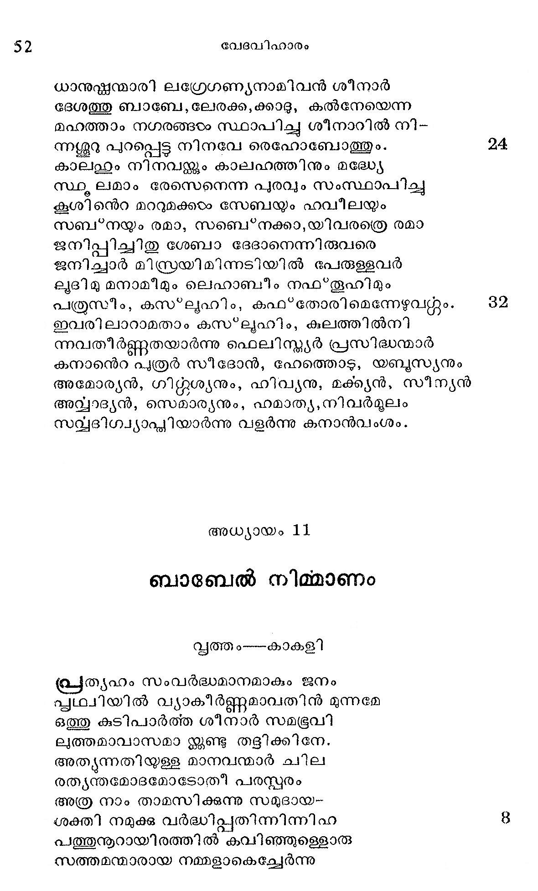
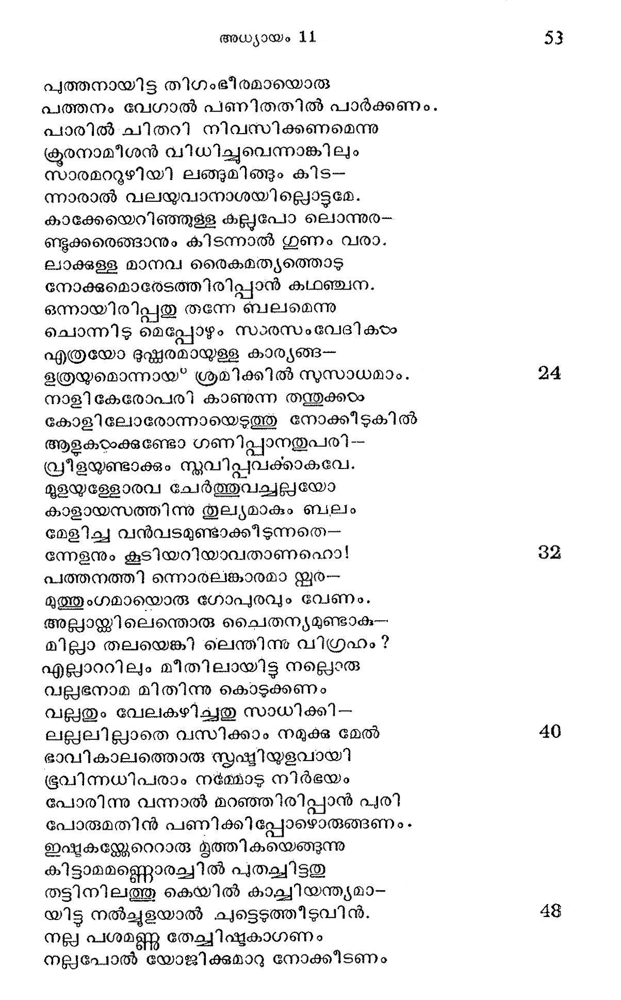
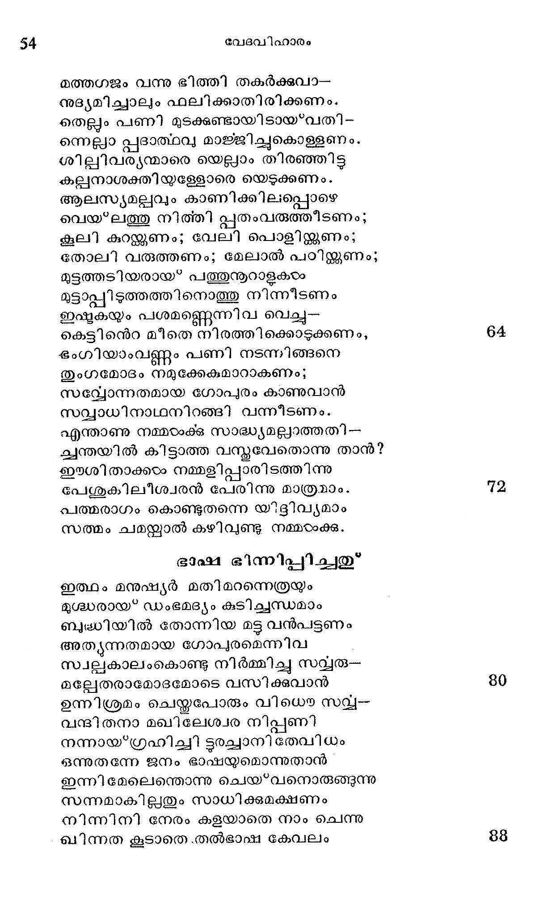
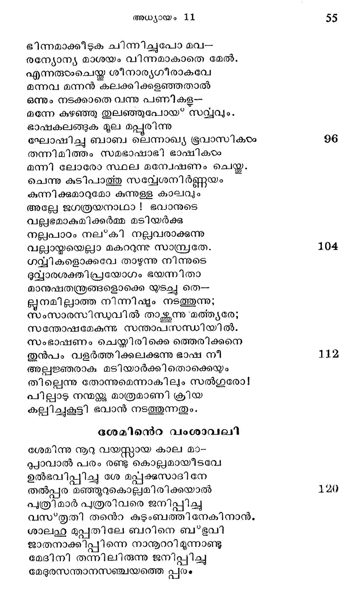
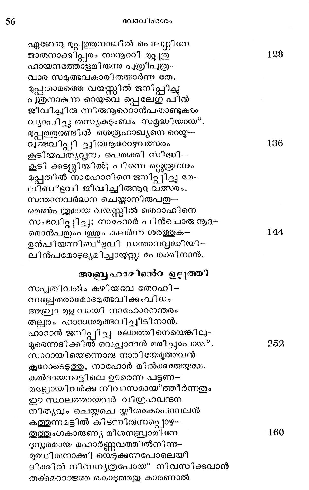

ബാബേല് നിമ്മാണം
വൃത്ത൦----കാകളി
തൃഹം സംവരദ്ധമാനമാകും ജനം
പ്യഥ്വിയില് വ്യാകീര്ണ്ണമാവതിന് മുന്നമേ
ഒത്തു കുടിപാര്ത്ത ശീനാര് സമഭൂവി
ലത്തമാവാസമാ ന്കൂണ്ട തട്ടിക്കിനേ.
അതുൃന്നതിയുള്ള മാനവന്മാര് ചില
രതൃന്തമോടദമോടോത് പരസ്പരം
അത്ര നാം താമസിക്കുന്നു സമുദായ-
ശക്തി നമുക്ക വര്ദ്ധിപ്പതിന്നിന്നിഫ 8
പത്തുനൂറായിരത്തില് കവിഞ്ഞുള്ളൊരു
സത്തമന്മാരായ നമ്മളാകെച്ചേര്ന്നു

പത്തനായിട്ട തിഗംഭീരമായൊരു
പത്തനം വേഗാല് പണിതതില് പാര്ക്കണം.
പാരില് ചിതറി നിവസിക്കണമെന്നു
ക്രൂരനാമീശന് വിധിച്ചുവെന്നാങ്കിലും
സാരമററുഴിയി ലങ്ങുമിങ്ങും കിട--
ന്നാരാല് വലയുവാനാശയില്ലൊട്ടമേ.
കാക്കേയെറിഞ്ഞുള്ള കല്ലപോ ലൊന്നുര-
ണ്ടുക്കരെങ്ങാനും കിടന്നാല് ഗുണം വരാ.
ലാക്കള്ള മാനവ രൈകമത്യത്തൊട
നോക്കുമൊരേടത്തിരിപ്പാന് കഥഞ്ചന.
ഒന്നായിരിപ്പതു രുന്നേ ബലമെന്നു
ചൊന്നിടു മെപ്പോഴും സാരസം വേദികയം
എത്രയോ ദുഷ്ണരമായ്ളള കാര്യങ്ങ--
ഉത്രയയമൊന്നായ" ശ്രമിക്കില് സുസാധമാം.
നാളി കേരോപരി കാണുന്ന തന്തുക്കഠം
കോളിലോരോന്നായെടുത്തു നോക്കീടുകില്
ആളകരംക്കണ്ടോ ഗണിപ്പാനതുപരി ട്ട
വ്രീളയുണ്ടാക്കും സ്ലവിപ്പവക്കാകവേ.
മുളയ്യള്ളോരവ ചേര്ത്തുവച്ചല്ലയോ
കാളായസത്തിന്നു തുല്യമാകും ബലം
മേളിച്ച വന്വടമുണ്ടാക്കീടുന്നതെ--
ന്നേളനും കൂടിയറിയാവതാണഹൊ!
പത്തനത്തി ന്നൊരലങ്കാരമാ ഇൂര-
മുത്തുംഗമായൊരു ഗോപുരവും വേണം.
അല്ലായ്ക്കിലെന്തൊരു ചൈതന്യമുണ്ടാക-.
മില്ലാ തലയെങ്കി ലെന്തിന്നു വിഗ്രഹം?
എല്ലാററിലും മീതിലായിട്ട നല്ലൊരു
വല്ലഭനാമ മിതിന്നു കൊടുക്കണം
വല്ലതും വേലകഴിച്ചതു സാധിക്കി--
ലല്ലലില്ലാതെ വസിക്കാം നമുക്ക മേൽ
ഭാവികാലത്തൊരു സ്ൃഷ്ടിയുളവായി
ഭൂവിന്നധിപരാം നമ്മോടു നിര്ഭയം
പോരിന്നു വന്നാല് മറഞ്ഞിരിപ്പാന് പ്രി
പോരുമതിന് പണിക്കി പ്പോഴൊരുങ്ങണം .
ഇഷ്ടകന്റേറെറാരു മൃത്തികയെങ്ങുന്നു
കിട്ടാമമണ്ണൊരച്ചില് പുതച്ചിട്ടതു
തട്ടിനിലത്തു കെയില് കാച്ചിയന്ത്യമാ-
യിട്ട നല്ച്ചുളയാല് ചുട്ടെടുത്തീടുവിന്.
നല്ല പശമണ്ണൂ തേച്ചിഷൂുകാഗണം
നല്ലപോല് യോജിക്കുമാറു നോക്കീടണം

മത്തഗജം വന്നു ഭിത്തി തകര്ക്കുവാ-.
നുഭ്ൃയമിച്ചാലും ഫലിക്കാതിരിക്കണം.
തെല്ലം പണി മുടക്കുണ്ടായിടായ*വതി-
ന്നെല്ലാ പ്പദാത്ഥവ മാജ്ജിച്ചുകൊള്ളണം.
ശില്പിവര്യന്മാരെ യെല്ലാം തിരഞ്ഞിട്ട
കല്നാശക്തിയുള്ളോരെ യെടുക്കണം.
ആലസ്യമല്പവും കാണിക്കിലപ്പൊഴെ
വെയ'ലത്തു നിത്തി പ്പതംവരുത്തീടണം;
കൂലി കുറയ്ക്കണം; വേലി പൊളിയ്ക്കണം;
തോലി വരുത്തണം; മേലാൽ പഠിക്കണം;
മുട്ടത്തടിയരായ* പത്തുനൂറാളകയം
മുട്ടാപ്പി ടുത്തത്തിനൊത്തു നിന്നീടണം
ഇഷുകയും പശമണ്ണെന്നിവ വെച്ചു
കെട്ടിന്െറ മീതെ നിരത്തിക്കൊടുക്കണം,
ഭംഗിയാംവണ്ണം പണി നടന്നിങ്ങനെ
തുംഗമോദം നമുക്കേകമാറാകണം;
സല്ലോന്നതമായ ഗോപുരം കാണുവാന്
സവ്വാധിനാഥനിറങ്ങി വന്നീടണം.
എന്താണു നമ്മഠംക്കു സാദ്ധ്യമല്ലാത്തതി-
ചന്തയില് കിട്ടാത്ത വസ്കവേതൊന്നു താന്?
ഈശിതാക്കയം നമ്മളിപ്പാരിടത്തിന്നു
പേശുകിലീശ്വരന് പേരിന്നു മാത്രമാം.
പത്മരാഗം കൊണ്ടുതന്നെ യ്ടദ്ിവ്യമാം
സത്മം ചമന്കാല് കഴിവുണ്ടു നമ്മഠാക്കു.
ഭാക്ഷ ഭിന്നിപ്പിച്ചതു*
ഇത്ഥം മനുഷ്യര് മതിമറന്നെത്രയും
ഭുശ്ധരായ* ഡംഭമദ്യം കുടിച്ചന്ധമാം
ബുദ്ധിയില് തോന്നിയ മട്ട വന്പട്ടണം
അതുൃന്നതമായ ഗോപ)രമെന്നിവ
സ്വല്പകാലംകൊണ്ടു നിര്മ്മിച്ചു സവ്വരു--
മല്ലേതരാമോദമോടെ വസിക്കവാന്
ഉന്നിശ്രമം ചെയ്തപോരും വിധൌ സല്ച-
വന്ഭിതനാ മഖിലേശ്വര നിപ്പണി
നന്നായ്ഗ്രഹിച്ചി ടൂരച്ചാനി തേവിധം
ഒന്നുതന്നേ ജനം ഭാഷയ്യമൊന്നുതാന്
ഇന്നി മേലെത്തൊന്നു ചെയ*വനൊരുതുന്നു
സന്നമാകില്ലതും സാധിക്കുമക്ഷണം
നിന്നിനി നേരം കളയാതെ നാം ചെന്നു
ഖിന്നത കൂടാതെ .തല്ഭാഷഃ കേവലം

ഭിന്നമാക്കീടുക ചിന്നിച്ചുപോ മവ-
രന്യോന്യ മാശയം വിന്നമാകാതെ മേൽ.
എന്നരുടംചെയ്ത ശീനാര്യഗീരാകവേ
മന്നവ മന്നന് കലക്കിക്കളഞ്ഞതാൽ
ഒന്നും നടക്കാതെ വന്നു പണികള--
മന്നേ കുഴഞ്ഞു തുലഞ്ഞുപോയ* സവ്വവും.
ഭാഷകലങ്ങുക മൂല മപ്പൂരിന്നു
ഘോഷിച്ചു ബാബ ലെന്നാഖ്യ ഭൂവാസികടം
തന്നിമിത്തം സമഭാഷാഭ്ി ഭാഷികടം
മന്നി ലോരോ സ്ഥല മനോവേഷണം ചെയ്ത.
ചെന്നു കുടിപാത്തു സവ്യേശനിര്ണ്ണയം
കുന്നിക്കുമാറുമോ കുന്നുള്ള കാലവും
അല്ലേ ജഗത്രയനാഥാ ! ഭവാനുടെ
വല്ലഭമാകുമിക്കര്മ്മ മടിയര്ക്കു
നല്ലപാഠം നല്*കി നല്ലവരാക്കുന്നു
വലായ്മയെല്ലാ മകററുന്നു സാമ്പ്രതേ.
ഗവ്വികളൊക്കവേ താഴുന്നു നിന്നുടെ
ഭുധ്വാരശക്തി പ്രയോഗം ഭയന്നിതാ
മാനുഷതന്ത്രങ്ങളൊക്കെ യുടച്ച തെ
ളൂനമില്ലാത്ത നിന്നിഷ്ടം നടത്തുന്നു;
സംസാരസിന്ധുവില് താകന്നു “മത്ത്യരേ;
സന്തോഷമേകുന്നു സന്താപസന്ധിയില്.
സംഭാഷണം ചെയ്തിരിക്കെ ത്തെരിക്കനെ
തുന്പം വളര്ത്തിക്കലക്കുന്നു ഭാഷ നീ
അല്പജ്ഞരാക മടിയാര്ക്കിതൊക്കെയും
തില്ലെന്നു തോന്നുമെന്നാകിലും സല്ഥഗുരോ!
പില്ലാടു നന്മക്കു മാത്രമാണി ക്രിയ
കല്ലിച്ചുകൂട്ടി ഭവാന് നടത്തുന്നതും.
ശേമിന്െറ വംശാവലി
ശേമിന്നു നൂറു വയസ്ത്കായ കാല മാ-
ദൂ്യാവാല് പരം രണ്ടു കൊല്പമായീടവേ
ഉല്ഭവിപ്പിച്ചു ശേ മപ്പുക്കസാദിനേ
തല്പ്പര മഞ്ഞൂറുകൊല്ലമിരിക്കയാല്
പുത്രിമാര് പുത്രരിവരെ ജനിപ്പിച്ച
വസഴ*തൃതി തനെൌ കുടുംബത്തിനേകിനാന്ം
ശാലഥഹു മുപ്പതിലേ ബറിനെ ബഭുവി
ജാതനാക്കിപ്പിന്നെ നാന൯ാറിമൂന്നാണ്ടു
മേദിനി തന്നിലിരുന്നു ജനിപ്പിച്ചു
മേദുരസന്താനസഞ്ചയത്തെ പ്പരം

ഏബേറു മുപ്പത്തുനാലില് പെലറ്ശി നേ
ജാതനാക്കിപ്പരം നാനററി മുപ്പതു
ഹായനത്തോളമിരുന്നു പുത്രീപുത്ര-
വാര സമുത്ഭവകാരി തയാര്ന്നു തേ.
മുപ്പതാമത്തെ വയസ്സില് ജനിപ്പിച്ചു
പുത്രനാകുന്ന റെയുയുവെ പ്പെലേഗു പിന്
ജീവിച്ചിരു ന്നിരുനൂറെറാന്പതാണ്ടുകഠം
വ്യാപിച്ചു തസ്ൃയകുടുംബം സമൃദ്ധിയായ്.
മുപ്പത്തുരണ്ടില് ശെരൂഹാഖ്യനെ റെയ്ക-
വൃത്ഭവിപ്പി ചവിരുനൂറേറഴുവത്സരം
കൂടിയപത്യപ്വന്ദം പെരുക്കി സിദ്ധി --
കൂടി ക്കടശ്ശിയില്; പിന്നെ ശ്ലെരൂഗനും
മുപ്പതില് നാഹോറിനെ ജനിപ്പിച്ചു മേ-
ലിബ*ഭവി ജീവിച്ചിരുനറു വത്സരം.
സന്താനവര്ദ്ധന ചെയ്താനിരുപതു--
മെണ്പതുമായ വയസ്ത്റില് തെറാഹിനെ
സംഭവിപ്പിച്ച; നാഹോര് പിന്പൊരു ൯-൦
മൊന്പതുംപത്തും കലര്ന്ന ശരത്തുക-
ളന്പിയന്നിബ'*ഭവി സന്താനവ്ൃദ്ധിയി-
ലിന്പമോടുദ്യമിച്ചായസ്ത പോക്കിനാന്.
അബ്ര ഹാമിന്െറ ഉല്പത്തി
സപ്യതിവഷം കഴിയവേ തേറഹി-
ന്നല്ലേതരാമോദമുത്ഭവിക്കുംവിധം
അബ്രാ മുള വായി നാഹോറനന്തരം
തല്ലരം ഹാറാനുമുത്ഭവിച്ചീടിനാന്.
ഫാറാന് ജനിപ്പിച്ചു ലോത്തിനെയെങ്കിലു--
മൂരെന്നദിക്കില് വെച്ചാറാന് മരിച്ചുപോയ.
സാറായിയെന്നൊരു നാരിയേമൂത്തവന്
കൂറോടെടുത്തു, നാഹോര് മില്ക്കയേയുമേ.
കല്ദായനാട്ടിലെ ഉരരെന്ന പട്ടണ-
മല്ലോയിവര്ക്ക് നിവാസമായ്*ത്തീര്ന്നതും
ഈ സ്ഥലത്തായവര് വിഗ്രഹവന്ദന
നിത്യവും ചെയ്തചെ ഗ്ലലീശകോപാനലന്
കത്തുന്നമട്ടില് കിടന്നിരുന്നപ്പൊഴു-
തുത്തുംഗകാരുണ്യ മീശനബ്രാമിനേ
ദുന്മരമായ മഹാര്ണ്ണവത്തില്നിന്നു-
മുത്ഥി തനാക്കി യെടുക്കുന്നപോലെയീ
ദിക്കില് നിന്നന്ൃയത്രപോയ് നിവസിക്കുവാന്
തക്കമററാജ്ഞ കൊടുത്തതു കാരണാൽല്

തേറഛുപത്രനാ മബ്രാം തഥാ ലോത്തു
സാറായി യെന്നിവരോടുകൂടടി ജജവം
പശ്ചിമദിക്കാം കനാനി.ലേക്കല്ബണ-
നിശ്ചയം യാത്ര പുറപ്പെട്ടുവെങ്കിലും 168.
മദ്ധുസ്ഥമായൊരു ഹാറാനിലെത്തിയീ
യദ്ധ്വഗര് പാര്ക്കെ ഭൃുതനായ* തിരാഹനും